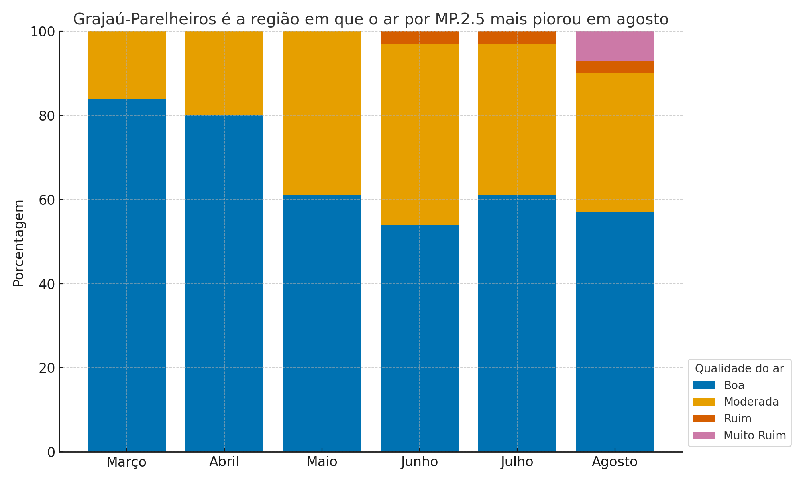

Atualmente, o Estado de São Paulo enfrenta uma crise ambiental sem precedentes, registrando os piores índices de qualidade do ar em 40 anos, segundo a Companhia Ambiental do Estado de São Paulo (CETESB). Na região metropolitana, a concentração de poluentes, como o material particulado (MP 2.5), aumentou nas estações de monitoramento da qualidade do ar.
Grajaú-Paralheiros teve a pior concentração de material particulado (MP 2.5) na Grande São Paulo em agosto, com base em boletins mensais da CETESB de janeiro a agosto deste ano, com a qualidade do ar na região atingindo o índice de muito ruim em 7% dos dias do mês. De acordo com a Organização das Nações Unidas (ONU), o MP 2.5 é um dos poluentes mais nocivos à saúde humana. Na região, 57% da qualidade do ar foi considerada boa, 33% moderada e 3% ruim.
O material particulado consiste em partículas finas que são invisíveis a olho nu, mas se tornam perceptíveis como névoa em áreas altamente poluídas, estando presentes tanto dentro quanto fora das residências. A Cetesb aponta que as principais fontes de emissão incluem veículos automotores, processos industriais, queima de biomassa e ressuspensão de poeira.
Segundo a companhia, o tamanho das partículas está diretamente ligado ao seu potencial de causar problemas de saúde: quanto menores, mais sérios os efeitos. As emissões de material particulado conseguem penetrar profundamente nos pulmões e na corrente sanguínea, aumentando o risco de mortes por doenças cardíacas, pulmonares, derrames e câncer.
Ainda entre as regiões que apresentaram as piores qualidades, aparece o Parque D.Pedro II, que também apresenta cerca de 3% de sua qualidade do ar como "muito ruim". Na região, 52% da qualidade do ar é considerada boa, 26% é tida como moderada e 19% é considerada como ruim. Junto com Grajáu, essas são as duas únicas regiões a apresentarem uma qualidade tão baixa no ano.
Marginal Pinheiros é a terceira região com a pior qualidade do ar no mês, com 24% da qualidade considerada ruim, 31% como moderada em agosto e 45% classificada como boa.
Crise na qualidade do ar é antiga
O País passa pela pior seca em sete décadas. A crise desencadeou incêndios florestais, majoritariamente criminosos segundo o governo, gerou ondas de fumaça, secou rios, dificultou o atendimento a comunidades isoladas e provocou problemas de saúde, especialmente respiratórios.
Ao longo do mês de setembro, o estado de São Paulo liderou o ranking de cidade com pior qualidade do ar no mundo, segundo dados site suíço IQAir. A piora da qualidade do ar, na verdade, vem acontecendo de forma progressiva desde o início do ano, segundo dados compilados pela reportagem com base em informações da Cetesb.
Desde março, diversas regiões começaram a registrar qualidade do ar moderada com mais frequência. Em abril, 19 das 24 regiões monitoradas pela Cetesb apresentaram aumento nos dias com ar moderado.
Em junho, regiões como a Cidade Universitária da USP e Grajaú-Parelheiros começaram a registrar ar ruim. Naquele mês, o Pico do Jaraguá, conhecido por sua área verde, foi a única região com qualidade de ar 100% boa. Em julho, nenhuma região manteve esse índice, com a USP registrando 20% de dias ruins e Osasco 16%.